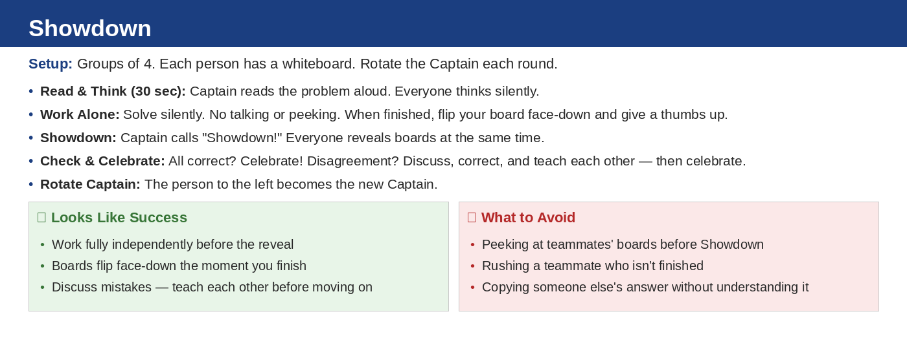

Unit 1 · Section 1 · Activity 1
Showdown
Multiple Representations of Relationships
Source: Practice Set 1.1.2
Time: 20–30 min
Groups: 4
Materials: Whiteboards + markers

Unit 1.1 · Activity 1 · ShowdownProblem 1
Problem 1
Representation type
A card shows the equation $C=8h+12$. What representation type is the card? What could the variables represent?
Unit 1.1 · Activity 1 · ShowdownSolution 1
Solution 1
Representation type
A card shows the equation $C=8h+12$. What representation type is the card? What could the variables represent?
Solution: This is an equation. One possible meaning: $h$ is hours and $C$ is total cost. The relationship could mean a $12$ starting fee plus $8$ dollars per hour.
Unit 1.1 · Activity 1 · ShowdownProblem 2
Problem 2
Inputs and outputs
In a table with columns labeled hours worked and total pay, which quantity is the input? Which quantity is the output?
Unit 1.1 · Activity 1 · ShowdownSolution 2
Solution 2
Inputs and outputs
In a table with columns labeled hours worked and total pay, which quantity is the input? Which quantity is the output?
Solution: The input is hours worked. The output is total pay, because pay depends on the number of hours worked.
Unit 1.1 · Activity 1 · ShowdownProblem 3
Problem 3
Graph to table
Use the graph to complete a table with at least four ordered pairs.
Unit 1.1 · Activity 1 · ShowdownSolution 3
Solution 3
Graph to table
Use the graph to complete a table with at least four ordered pairs.
Solution: One correct table is:
Other points on the line are also acceptable.
Unit 1.1 · Activity 1 · ShowdownProblem 4
Problem 4
Mismatch critique
A student says the graph from Problem 3 matches the table below. Determine whether the student is correct and justify your reasoning.
Unit 1.1 · Activity 1 · ShowdownSolution 4
Solution 4
Mismatch critique
A student says the graph from Problem 3 matches the table below. Determine whether the student is correct and justify your reasoning.
Solution: The student is not correct. The graph has points such as $(0,1)$, $(1,3)$, $(2,5)$, and $(3,7)$. The table has $(1,2)$, so it does not match the graph.
Unit 1.1 · Activity 1 · ShowdownProblem 5
Problem 5
Rational operations
Compute: $-\dfrac{2}{5}+\dfrac{1}{2}$
Unit 1.1 · Activity 1 · ShowdownSolution 5
Solution 5
Rational operations
Compute: $-\dfrac{2}{5}+\dfrac{1}{2}$
Solution: $-\dfrac{2}{5}+\dfrac{1}{2}=-\dfrac{4}{10}+\dfrac{5}{10}=\dfrac{1}{10}$
Unit 1.1 · Activity 1 · ShowdownProblem 6
Problem 6
Rational operations
Compute: $\dfrac{3}{4}-\left(-\dfrac{5}{12}\right)$
Unit 1.1 · Activity 1 · ShowdownSolution 6
Solution 6
Rational operations
Compute: $\dfrac{3}{4}-\left(-\dfrac{5}{12}\right)$
Solution: $\dfrac{3}{4}-\left(-\dfrac{5}{12}\right)=\dfrac{3}{4}+\dfrac{5}{12}=\dfrac{9}{12}+\dfrac{5}{12}=\dfrac{14}{12}=\dfrac{7}{6}$
Unit 1.1 · Activity 1 · ShowdownProblem 7
Problem 7
Rational operations
Compute: $-\dfrac{5}{7}+\dfrac{4}{5}$
Unit 1.1 · Activity 1 · ShowdownSolution 7
Solution 7
Rational operations
Compute: $-\dfrac{5}{7}+\dfrac{4}{5}$
Solution: $-\dfrac{5}{7}+\dfrac{4}{5}=-\dfrac{25}{35}+\dfrac{28}{35}=\dfrac{3}{35}$
Unit 1.1 · Activity 1 · ShowdownProblem 8
Problem 8
Rational operations
Compute: $-1\dfrac{6}{7}+\left(-\dfrac{3}{4}\right)$
Unit 1.1 · Activity 1 · ShowdownSolution 8
Solution 8
Rational operations
Compute: $-1\dfrac{6}{7}+\left(-\dfrac{3}{4}\right)$
Solution: $-1\dfrac{6}{7}+\left(-\dfrac{3}{4}\right)=-\dfrac{13}{7}-\dfrac{3}{4}=-\dfrac{52}{28}-\dfrac{21}{28}=-\dfrac{73}{28}=-2\dfrac{17}{28}$
Unit 1.1 · Activity 1 · ShowdownProblem 9
Problem 9
Sign decision
Compute and show enough work to justify your sign decision: $\left(3\dfrac{1}{3}\right)\left(-\dfrac{2}{5}\right)$
Unit 1.1 · Activity 1 · ShowdownSolution 9
Solution 9
Sign decision
Compute and show enough work to justify your sign decision: $\left(3\dfrac{1}{3}\right)\left(-\dfrac{2}{5}\right)$
Solution: $3\dfrac{1}{3}=\dfrac{10}{3}$, so $\dfrac{10}{3}\left(-\dfrac{2}{5}\right)=-\dfrac{20}{15}=-\dfrac{4}{3}$. The result is negative because positive times negative is negative.
Unit 1.1 · Activity 1 · ShowdownProblem 10
Problem 10
Division sign reasoning
Compute and explain whether the result should be positive or negative: $-2\dfrac{7}{12}\div\left(-\dfrac{1}{6}\right)$
Unit 1.1 · Activity 1 · ShowdownSolution 10
Solution 10
Division sign reasoning
Compute and explain whether the result should be positive or negative: $-2\dfrac{7}{12}\div\left(-\dfrac{1}{6}\right)$
Solution: $-2\dfrac{7}{12}=-\dfrac{31}{12}$. Then $-\dfrac{31}{12}\div\left(-\dfrac{1}{6}\right)=-\dfrac{31}{12}\cdot(-6)=\dfrac{31}{2}$. Negative divided by negative is positive.
Unit 1.1 · Activity 1 · ShowdownProblem 11
Problem 11
Error analysis
A student says $-\dfrac{1}{2}+\dfrac{3}{4}=-\dfrac{1}{4}$. Analyze the error and give the correct value.
Unit 1.1 · Activity 1 · ShowdownSolution 11
Solution 11
Error analysis
A student says $-\dfrac{1}{2}+\dfrac{3}{4}=-\dfrac{1}{4}$. Analyze the error and give the correct value.
Solution: The correct value is $\dfrac{1}{4}$. Since $-\dfrac{1}{2}=-\dfrac{2}{4}$, then $-\dfrac{2}{4}+\dfrac{3}{4}=\dfrac{1}{4}$. The student likely kept the answer negative instead of comparing absolute values.
Unit 1.1 · Activity 1 · ShowdownProblem 12
Problem 12
Design and compare
Design two different rational-number expressions with different operations that both have a value of $-\dfrac{3}{4}$. Explain how you know both are correct.
Unit 1.1 · Activity 1 · ShowdownSolution 12
Solution 12
Design and compare
Design two different rational-number expressions with different operations that both have a value of $-\dfrac{3}{4}$. Explain how you know both are correct.
Solution: Answers vary. One example: $-\dfrac{1}{2}-\dfrac{1}{4}=-\dfrac{3}{4}$ and $\dfrac{3}{2}\left(-\dfrac{1}{2}\right)=-\dfrac{3}{4}$.
Unit 1.1 · Activity 1 · ShowdownProblem 13
Problem 13
Read coordinates
Use the coordinate plane. State the coordinates of points P and S.
Unit 1.1 · Activity 1 · ShowdownSolution 13
Solution 13
Read coordinates
Use the coordinate plane. State the coordinates of points P and S.
Solution: $P=(-5,3)$ and $S=(4,0)$.
Unit 1.1 · Activity 1 · ShowdownProblem 14
Problem 14
Quadrants
Which labeled point on the coordinate plane in Problem 13 is in Quadrant III?
Unit 1.1 · Activity 1 · ShowdownSolution 14
Solution 14
Quadrants
Which labeled point on the coordinate plane in Problem 13 is in Quadrant III?
Solution: Point $Q$ is in Quadrant III because both coordinates are negative.
Unit 1.1 · Activity 1 · ShowdownProblem 15
Problem 15
Intercepts
A graph crosses the $x$-axis at $(4,0)$ and the $y$-axis at $(0,3)$. Identify the $x$-intercept and $y$-intercept.
Unit 1.1 · Activity 1 · ShowdownSolution 15
Solution 15
Intercepts
A graph crosses the $x$-axis at $(4,0)$ and the $y$-axis at $(0,3)$. Identify the $x$-intercept and $y$-intercept.
Solution: The $x$-intercept is $(4,0)$. The $y$-intercept is $(0,3)$.
Unit 1.1 · Activity 1 · ShowdownProblem 16
Problem 16
Plotting error
A student plots $(2,-5)$ in Quadrant I. Identify the error and explain how to plot the point correctly.
Unit 1.1 · Activity 1 · ShowdownSolution 16
Solution 16
Plotting error
A student plots $(2,-5)$ in Quadrant I. Identify the error and explain how to plot the point correctly.
Solution: The point $(2,-5)$ has positive $x$ and negative $y$, so it should be in Quadrant IV. Move right $2$ and down $5$.
Unit 1.1 · Activity 1Exit Ticket
6-Question Exit Ticket
Representation
1. A relationship is shown by $y=4x+9$. What type of representation is this? Name a possible input and output.
Representation
2. A table has columns labeled
number of tickets and
total cost. Which is the input and which is the output?
Operations
3. Compute: $-\dfrac{3}{5}+\dfrac{1}{4}$
Operations
4. Compute: $1\dfrac{1}{2}\left(-\dfrac{2}{3}\right)$
Coordinate plane
5. What quadrant contains a point with negative $x$ and positive $y$?
Coordinate plane
6. A student plots $(-3,-4)$ in Quadrant I. Explain the error.
Unit 1.1 · Activity 1Exit Ticket Answer Key
Exit Ticket Answer Key
Representation
1. A relationship is shown by $y=4x+9$. What type of representation is this? Name a possible input and output.
Representation
2. A table has columns labeled
number of tickets and
total cost. Which is the input and which is the output?
Operations
3. Compute: $-\dfrac{3}{5}+\dfrac{1}{4}$
Operations
4. Compute: $1\dfrac{1}{2}\left(-\dfrac{2}{3}\right)$
Coordinate plane
5. What quadrant contains a point with negative $x$ and positive $y$?
Coordinate plane
6. A student plots $(-3,-4)$ in Quadrant I. Explain the error.
Teacher key:
- Equation; possible input $x$, output $y$. Contexts vary.
- Input: number of tickets. Output: total cost.
- $-\dfrac{3}{5}+\dfrac{1}{4}=-\dfrac{12}{20}+\dfrac{5}{20}=-\dfrac{7}{20}$
- $1\dfrac{1}{2}\left(-\dfrac{2}{3}\right)=\dfrac{3}{2}\left(-\dfrac{2}{3}\right)=-1$
- Quadrant II.
- $(-3,-4)$ has negative $x$ and negative $y$, so it belongs in Quadrant III.